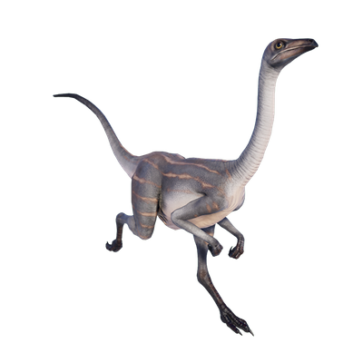

Useful Website
The name Struthiomimus means ‘ostrich mimic’, and was given to the genus thanks to its similarity to a modern-day ostrich, thanks to its extended neck and long hind legs – although it is significantly bigger than an ostrich, at around 4m in length and weighing up to 150kg. Struthiomimus is an herbivorous genus and feeds mainly on soft plants, as its jaw does not contain teeth.
